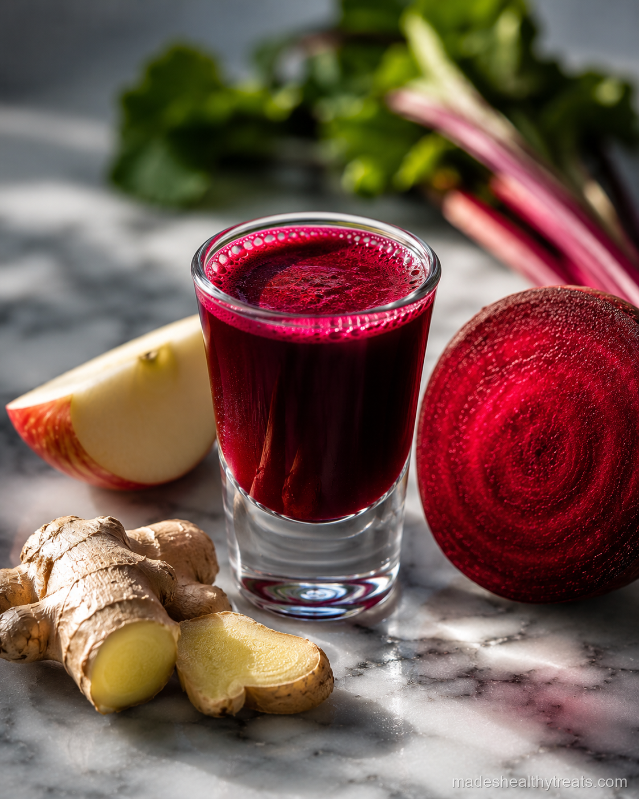
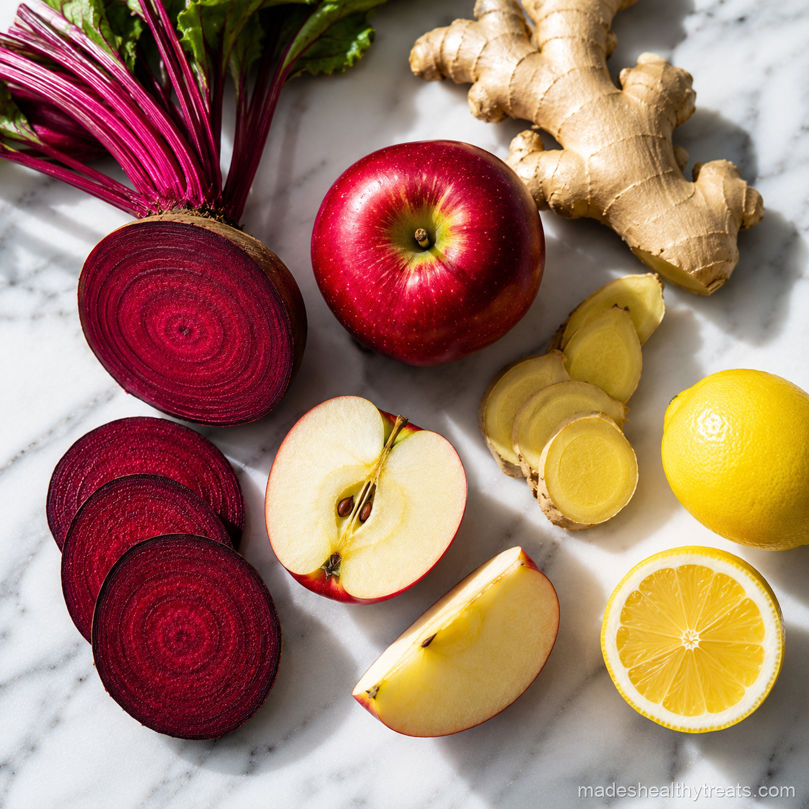

Why I Take This One
I take this one because beetroot feels powerful without needing to shout. The natural nitrates in beets are linked with blood flow, and when I pair that earthiness with apple and lemon, the flavor becomes juicy instead of muddy.
This is the shot I reach for before movement. I like it before walks, light workouts, or busy mornings when I know I will be on my feet and want my body to feel supported rather than pushed.

Here's What You'll Need
You will need one medium beetroot peeled and chopped, half a red apple cored, a one inch piece of fresh ginger, the juice of half a lemon, and a quarter cup of cold water.
How I Make It
I add the chopped beetroot, apple, ginger, lemon juice, and cold water to the blender. Then I blend on high until the color turns deep ruby and the apple has disappeared into the mixture.
I strain it well because beet pulp can be thick, and I press until the juice runs smooth. I pour it into a shot glass, drink it fresh, and rinse the counter quickly because beet juice loves to leave evidence.
Made's Tips
Wear an apron if you are making this before leaving the house because beet juice has no respect for white shirts.
Apple is the flavor bridge here, so I use a sweet crisp one whenever I can.
If the beet tastes too earthy, an extra squeeze of lemon usually fixes everything.